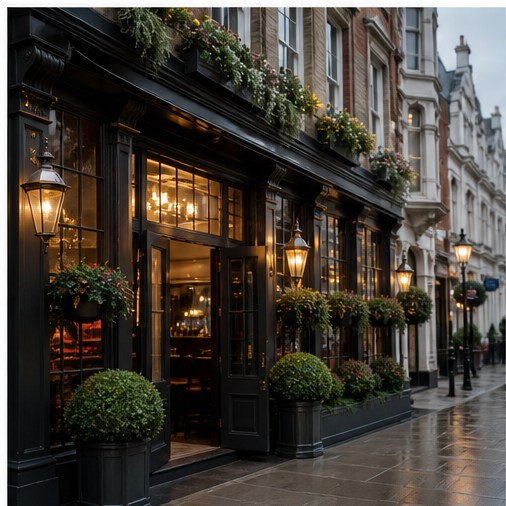
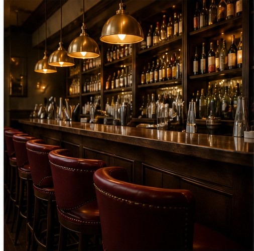
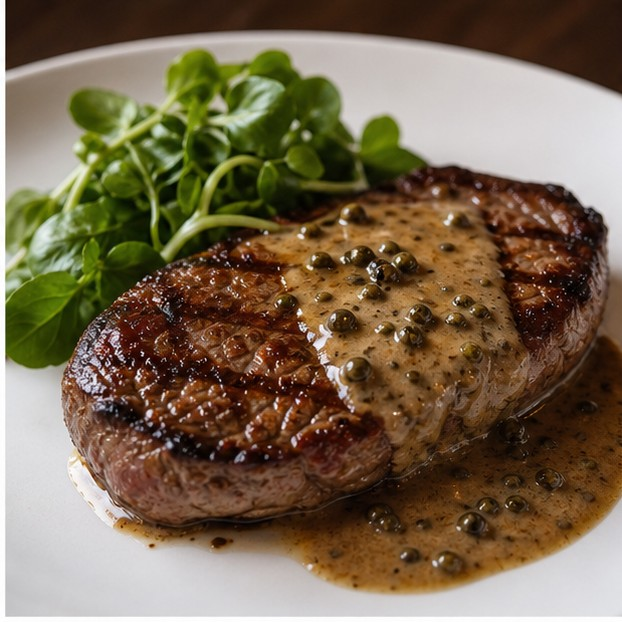

Rustique York
French bistro dining on Castlegate, close to Clifford's Tower, presented with a clearer menu, stronger booking path and a more confident first impression for York visitors.
A modern first impression for a lively French bistro
This concept preview shows how Rustique York could feel clearer on mobile: guests understand the food, the atmosphere and the location before they decide to book.
Make booking the obvious next step
A restaurant website should not make guests hunt for a table. This concept keeps the booking request close to the top, simple on mobile and clear for international visitors.
- Visible CTA from the first screen
- Simple date, time and party-size fields
- Space for allergies and visitor notes
Request a Table
Concept preview only. This form can be connected to Rustique's real booking process on a final website.
Food & Atmosphere
Placeholder images show how food, room details and bistro energy can work together. They are not official Rustique photography.

Street-level first impression
Give visitors a confident sense of arrival before they walk in.

Busy bistro warmth
Show the room as lively, warm and worth booking ahead.

Food that feels immediate
Modern crops help dishes feel current without changing the brand.
International & Chinese Visitor Guide
York receives visitors from around the world. This section helps them understand the restaurant quickly without weakening the bistro feel.
Near Clifford's Tower
Simple wording explains that the restaurant is on Castlegate and easy to combine with York city-centre sightseeing.
What to order
Signature dishes can include short plain-English notes for guests who are new to French bistro dining.
Plan ahead
Clear booking prompts reduce uncertainty for tourists visiting at busy lunch and dinner times.
Guest confidence
A final version can add Chinese visitor notes, dietary guidance and payment expectations where useful.
What This Concept Improves
The goal is not to make a flashy page. The goal is to help a real restaurant look clearer, more modern and easier to book.
More modern first impression
Guests see a polished bistro identity before they scroll.
Clearer mobile menu
Categories, descriptions and prices are readable on a phone.
Stronger booking CTA
The table request path is visible from the hero and booking section.
Better York visitor context
Location and nearby landmark context help tourists choose faster.
Richer atmosphere presentation
Food, room and arrival visuals tell one consistent story.
Demo Contact Area
These details show where real restaurant information would sit. They should be replaced with official Rustique details before any launch.
Location Context
Castlegate, York
Near Clifford's Tower
Demo Phone
+44 0000 000000
For concept preview only
Demo Email
booking@example.com
Replace before launch
Opening Hours
Example only
12:00 - 22:00
For Rustique Restaurant's owner
This is a custom concept preview showing how a cleaner mobile site could present Rustique York's French bistro positioning, menu, booking request and visitor guidance more clearly.
Back to Top